Court voyage
Dakar
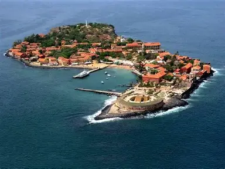
Île de Gorée
Entre mémoire et calme face à l'océan, On arrive sur l'île de Gorée après la traversée en bateau depuis Dakar. Dès les premières minutes, l'ambiance change complètement. Les rues sont calmes, les maisons colorées, et il y a très peu de bruit. En avançant dans les ruelles, on tombe sur la Maison des Esclaves. Le lieu est simple dans son apparence, mais chargé d'histoire. On ressent vite le poids du passé. À l'extérieur, la vue sur l'océan crée un contraste fort avec ce qu'on vient de voir. La visite reste marquante. Ce n'est pas un simple lieu touristique, c'est un endroit qui pousse à réfléchir
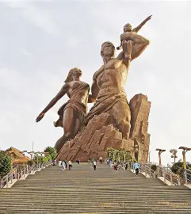
Monument de la Renaissance Africaine
En arrivant à Dakar, le Monument de la Renaissance Africaine se dresse fièrement sur une colline, dominant la ville. C'est une structure imposante, faite de bronze et de verre, représentant une famille africaine en marche vers l'avenir. La première impression est celle d'une œuvre grandiose, presque écrasante par sa taille. En s'approchant, on peut admirer les détails du monument : les visages expressifs, les mains tendues vers le ciel, et les vêtements traditionnels sculptés avec soin. Le monument symbolise l'espoir et la résilience du continent africain, mais il suscite aussi des débats sur son coût et sa pertinence. Malgré les controverses, le Monument de la Renaissance Africaine reste un point de repère incontournable à Dakar, offrant une vue panoramique sur la ville et l'océan Atlantique.
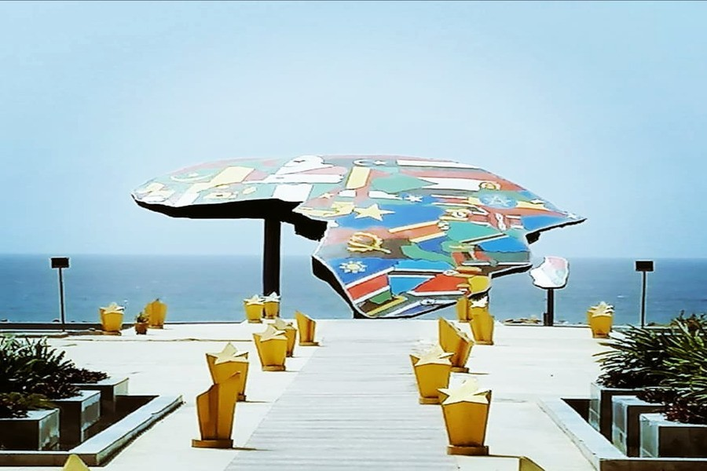
Place du Souvenir Africain
La Place du Souvenir Africain est un espace de mémoire situé à Dakar, dédié à la commémoration des victimes de l'esclavage et de la traite négrière. En arrivant sur la place, on est frappé par l'atmosphère solennelle qui y règne. Le monument central, une sculpture en bronze représentant des chaînes brisées, symbolise la libération et la résilience du peuple africain. Autour du monument, des plaques commémoratives portent les noms de milliers de personnes réduites en esclavage, rappelant l'ampleur de cette tragédie historique. La place est souvent utilisée pour des cérémonies officielles et des événements éducatifs, renforçant son rôle de lieu de mémoire et de réflexion. En visitant la Place du Souvenir Africain, on ressent une profonde connexion avec l'histoire et une prise de conscience de l'importance de se souvenir pour construire un avenir meilleur.
Thiès
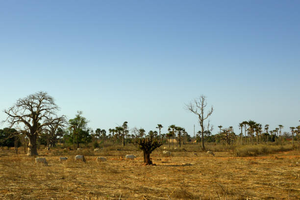
Forêt de Thiès
La forêt classée de Thiès est un véritable trésor naturel, abritant une biodiversité exceptionnelle. En y pénétrant, on se retrouve immergé dans un monde verdoyant, où les sons de la nature dominent. Les sentiers balisés permettent de découvrir les différents habitats et leurs habitants. L'espace est idéal pour les randonneurs et les amoureux de la nature. On peut y observer de nombreux oiseaux et animaux, tout en profitant de la fraîcheur de l'ombre des arbres.
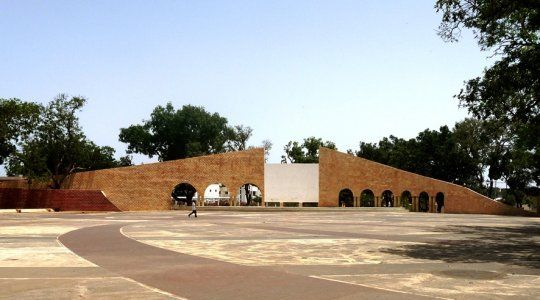
Place de France
La Place de France se trouve dans une zone active de Thiès. L'espace est ouvert, avec beaucoup de passage et une ambiance urbaine constante. On voit les habitants circuler et les activités du quotidien. Sur place, on ressent aussi un côté historique et central dans la ville. C'est un point où on peut s'arrêter quelques minutes pour observer la vie autour. L'endroit reste simple mais important dans l'organisation de la ville.
Commentaires
Jean
excellent ! J'ai adoré.
Publié le 15 Janvier 2026Rocky
pas mal comme lieux, merci pour le partage.
Publié le 08 avril 2026Laisser un commentaire
Mbour / Saly
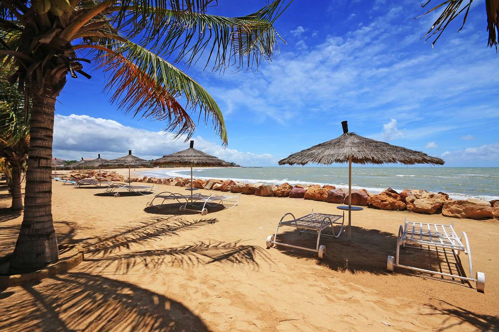
Plage de Saly
La plage de Saly est un endroit populaire pour les touristes et les locaux. En arrivant, on est accueilli par une étendue de sable fin et une mer calme. L'ambiance est détendue, avec des vendeurs ambulants proposant des rafraîchissements et des souvenirs. C'est un lieu idéal pour se relaxer, nager ou simplement profiter du soleil. La plage offre également une vue magnifique sur l'océan Atlantique, surtout au coucher du soleil.
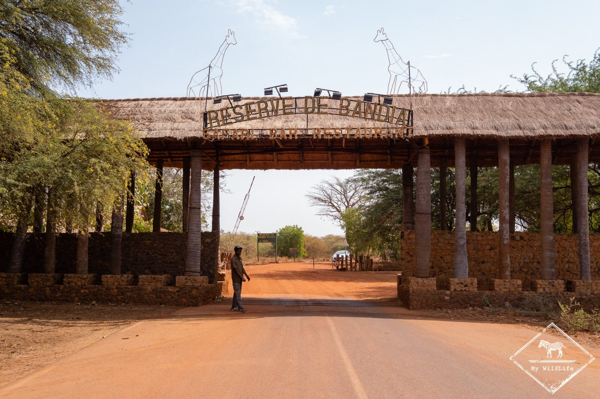
Réserve de Bandia
La réserve de Bandia est un parc animalier situé à proximité de Mbour. En entrant dans la réserve, on se retrouve face à une diversité impressionnante d'animaux africains, tels que des girafes, des rhinocéros, des zèbres et des antilopes. Le parc est bien entretenu, avec des sentiers qui permettent d'observer les animaux dans un environnement naturel. C'est une expérience enrichissante pour les amoureux de la faune et de la nature, offrant une opportunité unique de voir de près des espèces emblématiques du continent africain.
Commentaires
Ali
Super ! J'ai beaucoup aimé.
Publié le 19 Mars 2026Rama
Très satisfait, merci pour le partage.
Publié le 12 avril 2026Laisser un commentaire
Long voyage
Cap-Vert
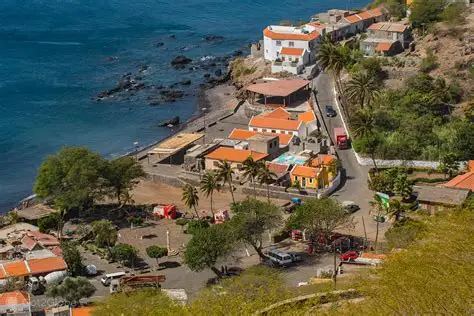
Cidade Velha
Cidade Velha, située sur l'île de Santiago au Cap-Vert, est un site historique riche en culture et en histoire. En arrivant, on est immédiatement frappé par l'atmosphère unique de ce lieu, avec ses rues pavées, ses bâtiments coloniaux colorés et son ambiance chaleureuse. La ville a été fondée au 15ème siècle et a joué un rôle crucial dans l'histoire du commerce des esclaves. En explorant les ruelles, on découvre des sites historiques tels que la forteresse de São Filipe et la cathédrale de Nossa Senhora do Rosário. Cidade Velha est un endroit où l'histoire prend vie, offrant aux visiteurs une expérience immersive dans le passé du Cap-Vert.
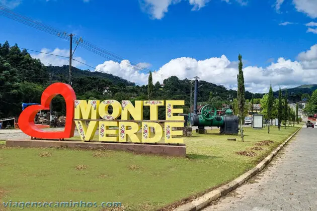
Monte Verde
Monte Verde est un site naturel et culturel situé au Cap-Vert. C'est un endroit magnifique, avec des paysages spectaculaires et une biodiversité remarquable. En explorant les sentiers, on découvre des cascades, des plages de sable fin et des forêts tropicales. Le site est également riche en histoire locale, avec des vestiges d'anciennes cultures. Les visiteurs peuvent apprendre plus sur la vie quotidienne des habitants et leurs traditions. Monte Verde est un lieu idéal pour les amoureux de la nature et ceux qui souhaitent découvrir l'authenticité du Cap-Vert.
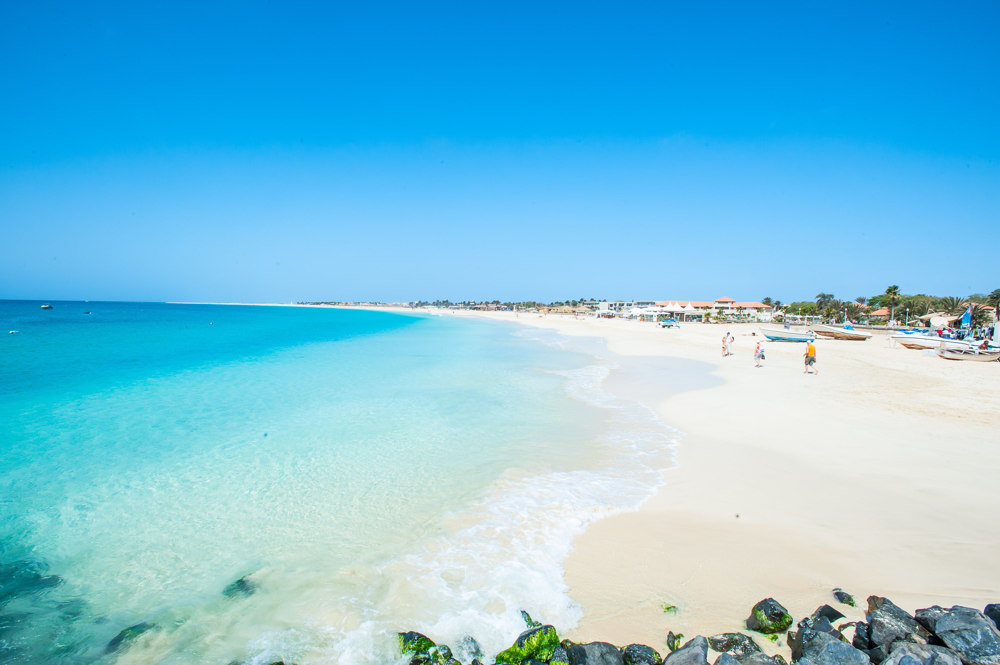
Praia de Santa Maria
Praia de Santa Maria est une plage magnifique située au Cap-Vert. En arrivant, on est accueilli par une étendue de sable blanc et une mer turquoise. L'ambiance est détendue, avec des vendeurs ambulants proposant des rafraîchissements et des souvenirs. C'est un lieu idéal pour se relaxer, nager ou simplement profiter du soleil. La plage offre également une vue magnifique sur l'océan Atlantique, surtout au coucher du soleil.
Commentaires
Pierre
Super cool ! J'ai beaucoup aimé.
Publié le 17 Mai 2026Adja
Extraordinaire, merci pour le partage.
Publié le 18 Octombre 2026Laisser un commentaire
Mali
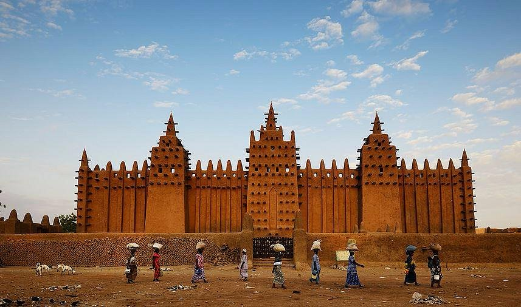
Mosquée de Djenné
La mosquée de Djenné, située au Mali, est un chef-d'œuvre de l'architecture en terre battue. En arrivant, on est immédiatement impressionné par sa grandeur et son esthétique unique. La mosquée est construite en banco, un matériau traditionnel à base de terre, ce qui lui confère une apparence chaleureuse et authentique. En explorant les environs, on découvre l'importance culturelle et religieuse de ce lieu pour la communauté locale. La mosquée est non seulement un lieu de culte, mais aussi un symbole de l'identité malienne et un site du patrimoine mondial de l'UNESCO. Visiter la mosquée de Djenné offre une expérience enrichissante, permettant de plonger dans l'histoire et la culture du Mali.
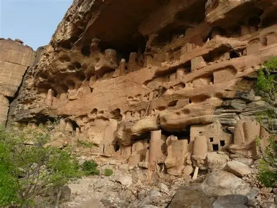
Falaise de Bandiagara
La falaise de Bandiagara, située au Mali, est un site naturel et culturel d'une beauté saisissante. En arrivant, on est émerveillé par les formations rocheuses impressionnantes qui s'élèvent majestueusement au-dessus du paysage. La falaise est habitée par les Dogons, une communauté qui a su préserver ses traditions et son mode de vie unique. En explorant la région, on découvre des villages perchés sur les falaises, des grottes sacrées et des paysages à couper le souffle. La falaise de Bandiagara est un lieu où la nature et la culture se rencontrent, offrant une expérience inoubliable pour les voyageurs en quête d'authenticité et de découverte.
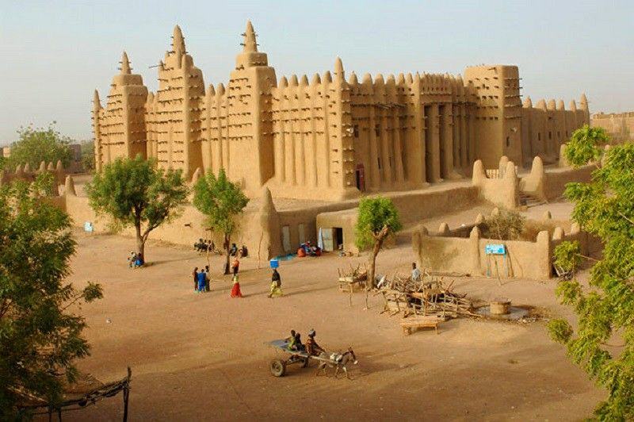
Ville de Tombouctou
Tombouctou est une ville historique située au Mali. En arrivant, on est immédiatement impressionné par son charme architectural et son atmosphere unique. La ville est connue pour son patrimoine culturel et académique, avec des mosquées et des bibliothèques anciennes. En explorant les rues étroites, on découvre des marchands vendant des produits traditionnels et des artisans créant des œuvres d'art uniques. Tombouctou est un lieu où l'histoire et la culture se rencontrent, offrant une expérience inoubliable pour les voyageurs en quête d'authenticité et de découverte.
Commentaires
Ansu
Machallah ! J'ai beaucoup aimé.
Publié le 10 Mars 2026Lamine
Tabarakallah, merci pour le partage.
Publié le 23 avril 2026Laisser un commentaire
Kenya
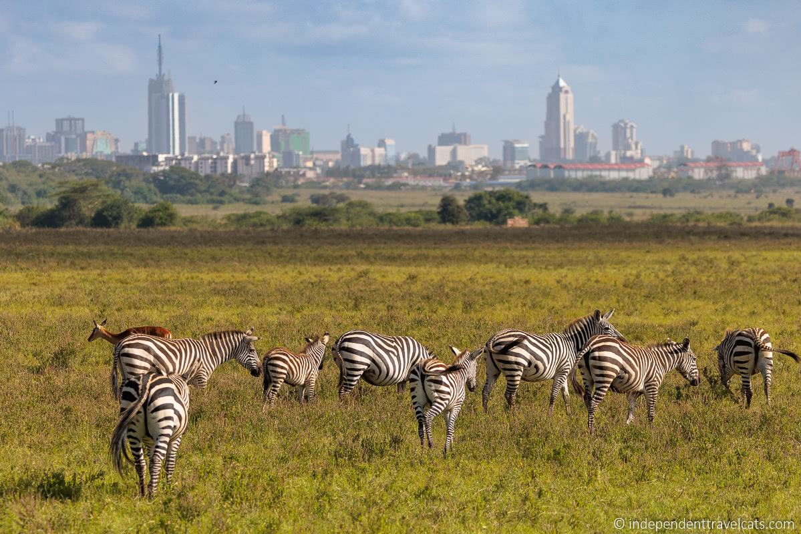
Nairobi
Nairobi, la capitale du Kenya, est une ville dynamique et en constante évolution. En arrivant, on est immédiatement frappé par l'atmosphère vivante de cette métropole, avec ses rues animées, ses bâtiments modernes et son ambiance cosmopolite. La ville a été fondée au début du 20ème siècle et a joué un rôle crucial dans l'histoire du Kenya. En explorant les quartiers, on découvre des sites historiques tels que le musée national et le parc national de Nairobi. Nairobi est un endroit où l'histoire et la modernité se rencontrent, offrant aux visiteurs une expérience immersive dans le passé et le présent du Kenya.
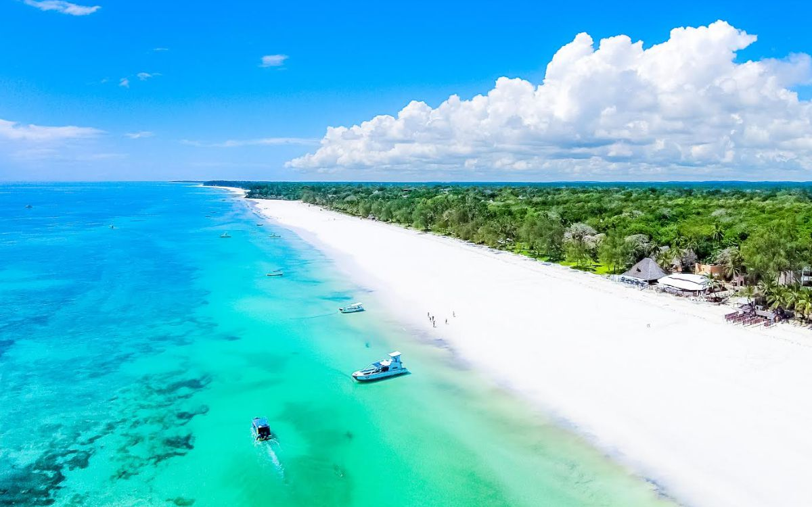
Plage de Diani
Diani Beach est une plage magnifique située sur la côte du Kenya. En arrivant, on est accueilli par une étendue de sable blanc et une mer turquoise. L'ambiance est détendue, avec des vendeurs ambulants proposant des rafraîchissements et des souvenirs. C'est un lieu idéal pour se relaxer, nager ou simplement profiter du soleil. La plage offre également une vue magnifique sur l'océan Indien, surtout au coucher du soleil.
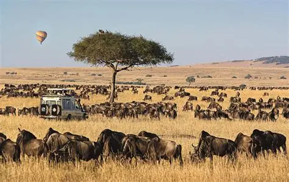
Parc national du Masai Mara
Le parc national du Masai Mara est l'un des lieux les plus emblématiques du Kenya. En arrivant, on est immédiatement impressionné par la beauté sauvage de ce territoire. L'ambiance est primitive, avec des paysages vastes et des animaux sauvages en liberté. C'est un lieu idéal pour les amateurs de safaris et ceux qui souhaitent découvrir la faune et la flore du Kenya. La réserve offre également une vue magnifique sur l'océan Indien, surtout au coucher du soleil.
Commentaires
Anta
Very Nice! J'ai beaucoup aimé.
Publié le 19 Mars 2026Sokhna Fatou
Nekhna loll sakh, merci pour le partage.
Publié le 18 Decembre 2025Laisser un commentaire
Tanzanie
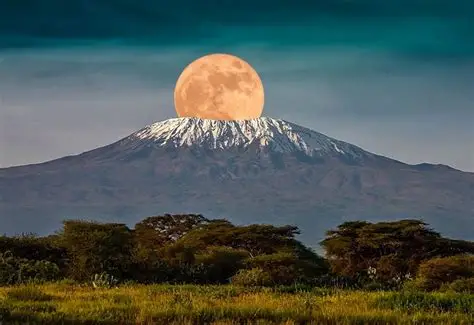
Mont Kilimandjaro
Le Mont Kilimandjaro est l'un des sommets les plus hauts d'Afrique et un véritable défi pour les alpinistes. En arrivant, on est immédiatement impressionné par l'ampleur de ce géant de la nature. L'ambiance est unique, avec des paysages variés et une faune et une flore diverses. Le site est également riche en histoire locale, avec des vestiges d'anciennes cultures. Les visiteurs peuvent apprendre plus sur la vie quotidienne des habitants et leurs traditions. Le Mont Kilimandjaro est un lieu idéal pour les amoureux de la nature et ceux qui souhaitent découvrir l'authenticité de la Tanzanie.
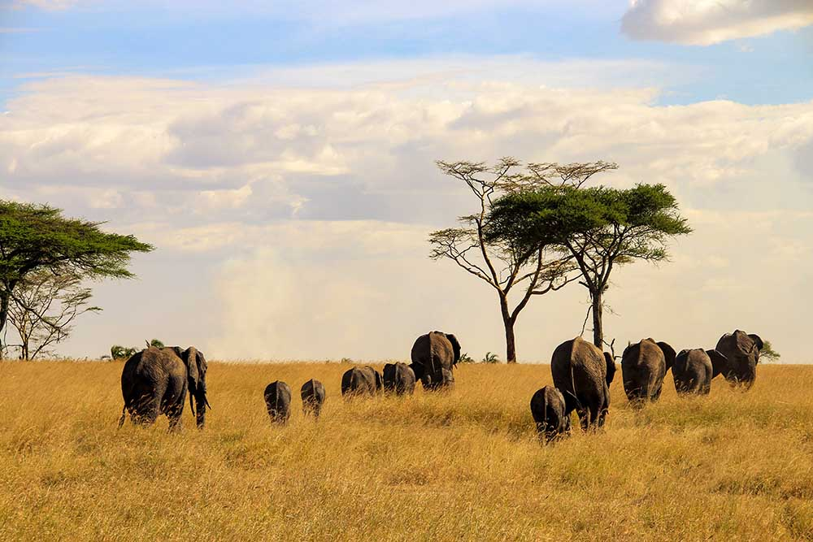
Parc National du Serengeti
Le Parc National du Serengeti est l'un des lieux les plus emblématiques de la Tanzanie. C'est un endroit magnifique, avec des paysages spectaculaires et une biodiversité remarquable. En explorant les sentiers, on découvre des cascades, des plages de sable fin et des forêts tropicales. Le site est également riche en histoire locale, avec des vestiges d'anciennes cultures. Les visiteurs peuvent apprendre plus sur la vie quotidienne des habitants et leurs traditions. Le Parc National du Serengeti est un lieu idéal pour les amoureux de la nature et ceux qui souhaitent découvrir l'authenticité de la Tanzanie.
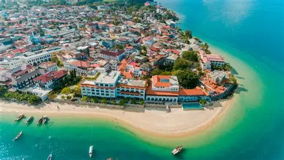
Zanzibar
Zanzibar est une île magnifique située sur la côte orientale de la Tanzanie. En arrivant, on est accueilli par une ambiance chaleureuse et une architecture coloniale bien conservée. L'île est connue pour ses plages de sable blanc, ses eaux cristallines et sa richesse culturelle. C'est un lieu idéal pour se relaxer, explorer les marchés locaux et découvrir l'histoire de l'île. La vue sur l'océan Indien est particulièrement magnifique, surtout au coucher du soleil.
Commentaires
Modou
Fi Bakhna! J'ai beaucoup aimé.
Publié le 15 Juin 2025Cheikh
Yé nekhna mais bi, bi mom nekhna.
Publié le 18 avril 2026
Commentaires
Joe
bel endroit ! J'ai beaucoup aimé.
Publié le 17 Mars 2026Fatou
Très intéressant, merci pour le partage.
Publié le 18 avril 2026Laisser un commentaire